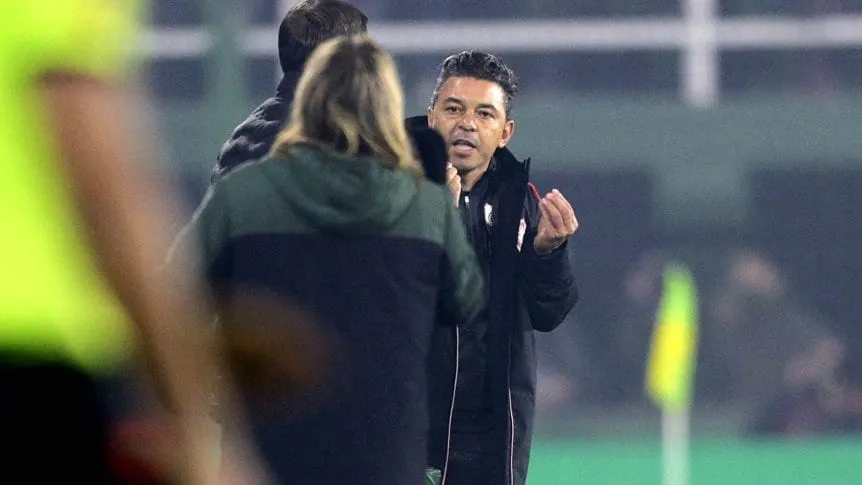

Se complican las negociaciones por Rossi en Boca Juniors
El arquero y su representante se presentaron a la reunión pactada este martes pasado el
mediodía con
la intención de seguir negociando la última oferta que había presentado el club. Sin
embargo, del
lado del Consejo de Fútbol, la propuesta, que Jorge Bermúdez había calificado como
"gigante", es
definitiva y, por lo tanto, dio por finalizado el asunto y Rossi se irá del club cuando
finalice su
contrato vigente hasta junio de 2023.
El club evalúa por estas horas publicar un comunicado para informar de la situación del arquero,
por el
que toda la Bombonera pidió su continuidad.
Ahora, la principal duda es que actitud tomará Boca Juniors con respecto a Rossi: el próximo fin
de
semana podría atajar Javier García. Por el momento, la institución no planea salir al mercado de
pases a
buscar un reemplazante. Pero a Rossi sólo lo venderá por un monto igual o superior a su cláusula
de
rescisión que ronda entre los 18 y 25 millones de dólares.
El arquero llegó a Boca a comienzos de 2017, procedente de Defensa y Justicia. Perdió el puesto
en 2018
con la llegada de Esteban Andrada, no obstante, por lesión del titular, atajó en la campaña en
la que
alcanzaron la final de al CONMEBOL Libertadores 2018 y estuvo en cancha en la primera
definición.
En busca de continuidad, fue cedido en 2019, primero al Antofagasta chileno y a Lanús, en el
segundo
semestre. Regresó a Boca en 2021, como suplente de Andrada, hasta que el titular partió a
México. En
este último período se convirtió en una de las piezas más importantes del equipo, con destacadas
actuaciones en las definiciones por penales.
Falcioni es el nuevo DT de Independiente
El nuevo entrenador firmó su contrato por un año este martes
y dirigirá la práctica y recién
el
miércoles será presentado en conferencia de prensa.
Al Emperador no le renovaron contrato a fin de 2021, en la etapa de Rolfi Montenegro
como
mánager, quien
llevó al banco como reemplazante a Eduardo Domínguez, quien renunció al cargo el 12 de
julio
pasado. Por
su parte, Falcioni continuó su carrera en Colón, donde dirigió también hasta el 7 del
mes
pasado, cuando
fue cesado por la dirigencia santafesina, a raíz de los malos resultados.
La crisis
deportiva a
institucional de Independiente también derivó en las salida de Rolfi Montenegro, quien
negó que
haya
tenido que ver con el posible regreso (en ese momento sin confirmar) de Falcioni, y el
DT
interino
Claudio Graf. Lo positivo fue que se fijó una fecha de elecciones, para las que Hugo
Moyano no
se
presentará para la relección.
Falcioni tuvo su primera etapa como DT del Rojo en la
temporada
2005/06 y la segunda en 2001.
Los verdaderos motivos que distanciaron a Beccacece de Gallardo
Antes del violento cruce de hace unos meses, hay una historia de desencuentros. Por qué el técnico de Defensa tiene apuntado al de River..
En Varela el equipo se sigue rearmando después del tremendo impacto que generó haber perdido calidad y cantidad de futbolistas en el último mercado de pases (Pizzini, Bou, Rotondi y Merentiel los más importantes). Defensa y Justicia acomoda sus nuevas piezas con un andar irregular en el torneo local mientras sostiene viva la ilusión de pelear hasta el final en la siempre difícil y apasionante Copa Argentina. Tras haber dejado atrás a Argentinos Juniors en etapa de 16avos de final, en el horizonte del equipo de Sebastián Beccacece aparece nada más y nada menos que el River de Marcelo Gallardo, un rival que además de contar con los quilates de un plantel poderoso, pone frente a frente una vez más a dos entrenadores que han tenido roces y diferencias de criterios que se han hecho públicos en el último tiempo.
Pero la mediática historia del último cruce tiene antecedentes. El primer cortocircuito entre ambos técnicos tiene a un jugador como protagonista principal de esta historia. Enzo Fernández era el eje de juego dentro de una formación ganadora que Beccacece había heredado de Hernán Crespo y a la cual el actual el entrenador del Halcón le había puesto su sello para darle un salto de calidad mayor y superar al Palmeiras de Brasil para quedarse con la Recopa Sudamericana. En tiempos donde el juego atildado y la proyección a futuro ilusionaban a toda la gente del conjunto verde y amarillo, un llamado del propio Gallardo a Enzo Fernández alteró los ánimos, los tiempos y el rendimiento del equipo de Beccacece. Si bien en ese momento el volante con mayor proyección del fútbol argentino tenía contrato vigente con Defensa hasta diciembre de 2021, el llamado de Napoleón y la presión de River, hicieron que, previo pago a una suma de dinero menor, Fernández volviera al Millonario antes de tiempo y las fortalezas del equipo de Varela comenzaran a disminuir. Sin embargo, no fue ése el único futbolista que Gallardo, Francescoli y compañía decidieron tomar del campeón. También la institución de Núñez se hizo rápidamente de los servicios de Héctor David Martínez y Brian Romero, dos pilares importantes.
Aquella bronca acumulada tomó estado público cuando en julio de este año, en un partido mal jugado y que finalizó con empate en cero, ambos entrenadores terminaron cara a cara con mutuas y agresivas acusaciones: "¿Quién te crees que sos, qué te pasa, a quién te comiste?" y demás cuestiones que suman para el morbo del espectáculo y restan para que todo sea una fiesta. La historia había arrancado con Becca impidiendo un lateral para River. Y algunos se animan a afirmar que aquella noche y en zona de vestuarios la cosa pasó a mayores, pero nunca trascendieron imágenes al respecto.
